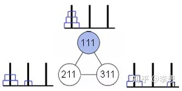
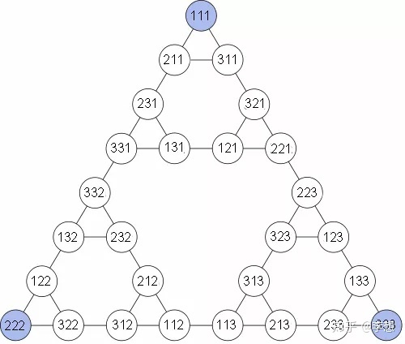
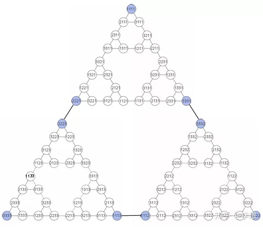
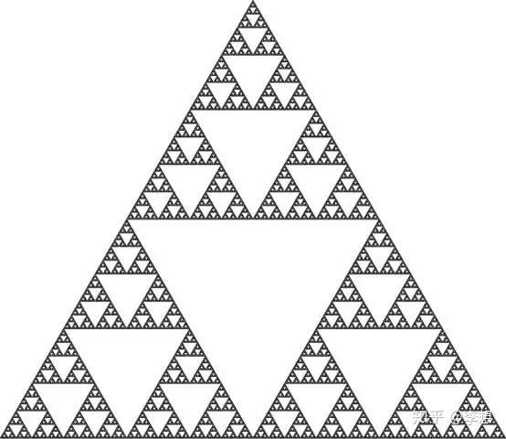
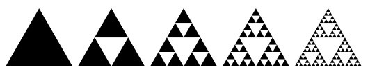

Stay Hungry Stay Foolish
Scherpinsky Triangle
Suppose you play the game with three discs and three stakes. Number plates 1, 2, and 3, with 1 having the smallest and 3 having the largest. Also mark piles 1, 2 and 3. Now suppose that plates 1 and 3 are on pile 1, and plate 2 is on pile 3. This case is encoded using triples (1,3,1), otherwise similar.
Now draw each triad into the circle on the paper. If stepping the disc can move from one ring to another, connect the two. For example, the initial states (1,1,1) (all plates are on pile 1) are connected to (2,1,1) ( plate 1 is on pile 2, all other plates are on pile 1) and (3,1,1) ( plate 1 is on pile 3, another plates are on pile 1). There are 3³=27 possible states. They constitute the following state transition diagram:
Playing hanota on three plates is easy, but what about four, five, six, or any number of n discs? From the perspective of the transition diagram, the answer is very beautiful: the state transition diagram H4 of the 4-dish Hanotta game contains three H3 diagrams, each of which is connected to the other two H3 diagrams by one side.
Mathematicians have found that increasing the number of plates raises some interesting questions. If there were an infinite number of discs in the game, what would the state transition graph look like? Well, look at the pictures below.
This is sierbinski's triangle. It's generated by another infinite recursive process. Starting with an equilateral triangle, remove the inverted triangle bounded by the midpoints of its three sides (remove only the inside of the inverted triangle and leave the three sides). Now I have three filled equilateral triangles left. Again, remove the inverted central triangles one by one, leaving nine triangles. Continue, always removing the inverted middle triangle from the remaining triangles,and repeat. You end up with sierbinski triangles.
As the plates in hannotta are gradually added, the corresponding state transition diagram is scaled to look more and more like a Serbinski triangle. As goes to infinity, you get the same structure as the Sierbinski triangle.
Reference
[1] The tower of Hanoi and Scherpinsky triangle
[2] The tower of Hanoi: the intersection of mathematics and psychology